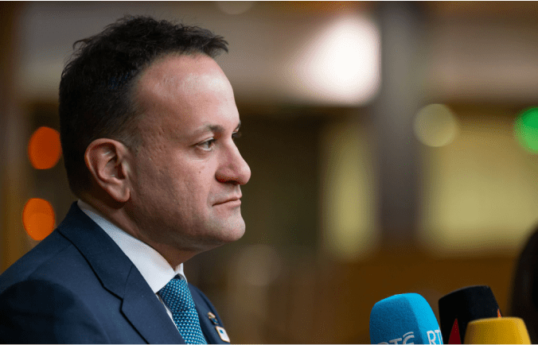
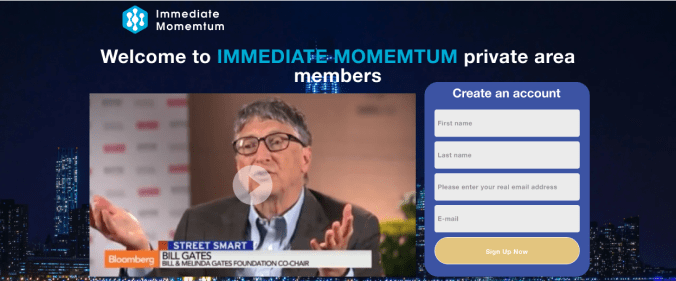
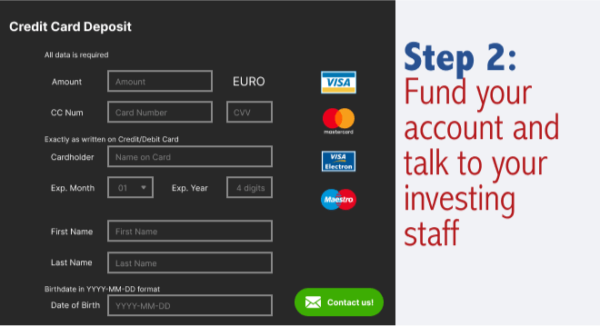
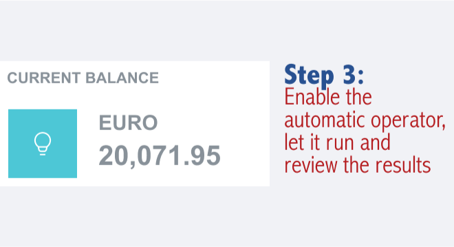

EXCLUSIVE INTERVIEW WITH Leo Varadkar
"You may have already heard of the new Immediate Momentum for assets's trading that is helping ordinary people in Ireland, Europe, and all over Asia, and America build fortunes overnight. You might be skeptical because it seems too good to be true."
Varadkar continue:
"I understand that, as I thought the same when a trusted friend told me about it. But after seeing for myself how much I was earning, I had to try it for myself."
"I am glad I tried it because it was the easiest and fastest money I have ever made. I'm talking thousands of {{CURRENCY}} in a day on autopilot. It is literally the fastest way to accumulate money right now. And it won't last much longer, as more and more people learn about it or when financial institutions decide to shut down the scheme."
WHAT IS IMMEDIATE MOMENTUM EXACTLY AND HOW DOES IT WORK?
Learn about Immediate Momentum the trading platform designed to enable ordinary people to profit in a variety of actives which has been one of the most lucrative investments of the 21st century.
Despite how troubled the global market has been in recent months, many traders continue making significant profits. Why? Because the market of trading includes a variety of digital assets besides, which still offer profit opportunities.
Some of these assets include virtually all the countries in the world that produce the assets and continue to offer profits of over 100% or even more for common investors.
Immediate Momentum uses Artificial Intelligence (AI) technology to automate the process of buying and selling these assets, allowing you to profit continuously, even while you sleep.
These technological geniuses have created multi-billion dollar companies companies to solve complex problems in areas such as online payments payments, IT and transport. Today, they are fighting economic inequality, that is a global problem by enabling everyone, rich and poor alike, to earn enough to survive, to earn enough money to lead a happy and fulfilling life.
THE SECRET TO MAKING MONEY THAT BIG BANKS DON'T WANT YOU TO KNOW
Leo Varadkar continues,
"We are facing tough economic times, and this is the solution people have been waiting for. Never before in history have we had such an incredible opportunity for ordinary people to generate great wealth in such a short time."
"Some people are hesitant to join this opportunity because it is so different. That's why big banks are trying to hide it! Big banks are creating ads and labeling Immediate Momentum as a scam. Why? Because they are worried that their big profits will decrease when their customers learn to create wealth for themselves."
"The truth is that on line trading represents the revolution of our lives, and anyone who doesn't seize this opportunity is missing out. I have already received calls and threats from large financial corporations because I am drawing people's attention to this technology. But I don't care. People in Ireland are already starting to realize the truth, and it's only a matter of time before more people do too. I'm sharing this because I have also received hundreds of emails from people thanking me for sharing this secret. My favorite is this: A young man bought his dream car for his younger brother (a Ferrari 488 Pista), with the money he earned from Immediate Momentum. Immediate Momentum is truly improving the lives of people all over the world."
DOES IMMEDIATE MOMENTUM REALLY WORK? WE TRIED IT
Our most experienced editors would not allow us to publish the interview with Leo Varadkar until we verified if Immediate Momentum is a legitimate money-making opportunity. Our corporate leadership did not want us to release any information that could potentially cause irish citizens to lose their hard-earned money.
Therefore, our editorial team tested Immediate Momentum to ensure that it really worked as Leo Varadkar described. One of our online editors, Padraig Smith, volunteered to risk his own money and try Immediate Momentum .
Padraig Smith is 47 years old and is a father of 2 children. His wife lost her job last year due to illness. He admitted that he was facing financial difficulties, and this investment opportunity could be the answer.
Padraig Smith says: :
"The first time I heard the interview with Leo Varadkar, I thought was joking. Making money from home seemed like a dream. I decided to try it anyway, given my financial circumstances and also for the sake of good journalism."
"I watched an introductory video about Immediate Momentum when I signed up. The video seemed to promise a lot, but I set aside my skepticism. Within hours, I received a call from my personal advisor. He answered all my questions, cleared all my doubts, and assured me that I would make money. That's it."
"As soon as I got access to Immediate Momentum, I deposited my initial investment of 250 Euros. That amount is what my family used to spend on fast food, so we stopped going to fast food restaurants for a month. Now we can be healthy and, who knows, rich too."
"Immediate Momentum platform uses advanced AI algorithms and Machine Learning to predict exactly when an assets will go up or down. Then, it buys and sells automatically for you all the time. The technology has already made our lives easier, so why not use it to make money too?"
REAL-TIME RESULTS OF PADRAIG SMITH WITH THE SYSTEM
"After just 1 hour of depositing the 250 €, the software started trading for me. To be honest, I was nervous that I would lose all my money. And, of course, my first trade resulted in a loss of 195 €!
I had a lump in my throat. I thought I had been scammed. I was even about to call my personal advisor and ask for my money back. Then I remembered what he said: **The algorithm is correct 80% to 89% of the time.** You won't win every time, but you'll win enough and make a profit overall.
So, I let the software continue trading, and I watched it. The next trade was profitable! Only 85 €, but it was something. Then a profit of 150 €. After that, another one for 300 €, with a total **profit of** 535 €. And all of this in less than 5 minutes!
I had a lump in my throat. I thought I had been scammed. I was even about to call my personal advisor and ask for my money back. Then I remembered what he said: **The algorithm is correct 80% to 89% of the time.** You won't win every time, but you'll win enough and make a profit overall.
Padraig Smith continues:
"Now, I am consistently making between 1020 € and 10,000 € per day, thanks to Immediate Momentum. The money is deposited into my bank account every few days. With just a few clicks, I receive the money within 24 to 48 hours. Every time I see the money in my account, I have to pinch myself to make sure I'm not dreaming."
"Fortunately, I love my job here because I share important news (like this) with people, or I would have left a long time ago. However, I've planned a trip for my family to Bali, Indonesia, to celebrate paying off my debts and finally getting our family's financial situation in order."
"All of this wouldn't have been possible without the generosity of Leo Varadkar who shared his secret live on television. I'm glad I risked my money on Immediate Momentum. My wife is happier than ever, and my daughters have plenty of toys."
"My colleagues regret not signing up two weeks ago, like I did. However, eventually, the entire office signed up (including my boss), and they call me a hero."
HOW TO GET STARTED WITH IMMEDIATE MOMENTUM (LIMITED SPOTS AVAILABLE)
To get started, you only need a computer, smartphone, or tablet with internet access. No specific skills are required, just the ability to use a computer and browse the internet. There's no need for technical knowledge or knowledge about trading, as the software and your personal advisor guarantee profits. Another advantage of this program is that you can start whenever you want. You can set your own schedule, whether dedicating 5 hours a week or 50 hours a week. You just need to activate the automatic trading software when you want and stop it when you want (although there's no reason to stop it).
To save time, we have created a step-by-step guide on how to get started.
HERE IS MY STEP-BY-STEP GUIDE:
The first step is to watch a video that highlights the power of Immediate Momentum. The presentation is impressive and straightforward, as is common in American products. To get started, just enter your name and email address along with the video.
(Tip: Even if you decide not to invest money, I recommend that you register now, as it's free, and spots could fill up at any time).
Step 1: Enter your details and open a free account
Next, you'll need to deposit money into your account. While I was browsing the deposit page, my phone rang. It was an international call, so I was hesitant to answer, but I soon realized who it was.
Step 2: Make a minimum initial investment of 250 €
Step 3 : Withdraw your profits (or continue investing to earn more!
"Without a doubt, my personal advisor was amazing. He guided me through the entire deposit process. They accept all major credit cards, such as Visa and MasterCard. I went ahead and deposited the minimum amount of 250 €. With funds in my account, I went to the "Auto Trader" tab in the software, set the recommended amount of 350 €. The software started making trades quickly, and at first, I was a little nervous, but I decided to let it work on its own."
"We all want to be rich, but few know how. Well, Immediate Momentum is the opportunity of a lifetime to achieve it. It won't be available for long, so don't miss out."
Leo Varadkar
UPDATE
We have received news that almost all spots have been taken. Immediate Momentum only accepts a limited number of users to keep profits high. We now have (37) spots left, so register as soon as possible to secure yours.